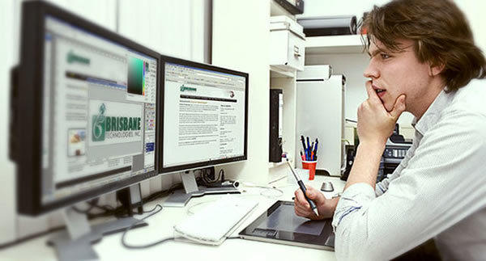

As interfaces da internet melhoraram muito, principalmente na última década e essa melhora é atribuída, entre outros motivos, aos trabalhos de web design. Uma das funções de um web designer é desenhar interfaces que atraiam o usuário e que, além disso, seja de uso fácil. Para exercer essa carreira tão ampla, que envolve a criação de web sites, é necessário entender sobre a elaboração de projetos e desenvolver interfaces que correspondam com as informações que o cliente forneceu sobre os objetivos do site, o que ele quer informar, como esta informação se transformará em uma comunicação eficiente, quais as estratégias para atingir o público-alvo e como esta interface pode ter maior usabilidade. Esta profissão envolve a criação de layouts, banners, projetos, scripts e melhoramento da estrutura dos sites.
Os softwares mais utilizados pelos web designers são o Adobe Photoshop, Fireworks e Illustrator para geração de imagens; Adobe Dreamweaver para trabalho com CSS e linguagens de marcação. Há também a alternativa de se usar um editor de imagem gratuito como o GIMP. Animações interativas exigem o Adobe Flash.
Delimitar as funções de um web designer é uma tarefa árdua, já que as demandas desse profissional podem migrar para linguagens de programadores como as linguagens de marcação XHTML, HTML, XML, por exemplo, ou algumas formas de script como ASP, PHP e Javascript. Ter algum conhecimento nessas linguagens é importante caso o trabalho demandar modificações em web template (modelo de página da web). Saber trabalhar com bancos de dados MySQL e PostgreSQL também é relevante, uma vez que se usará PHP e ASP.
Porém, nem sempre um web designer precisa ter conhecimento de todas essas linguagens de programação. A criação de uma interface geralmente depende mais de programas como o Photoshop, do Fireworks e do Dreamweaver, de um projeto bem feito e de muita criatividade.
O web designer precisa estar atualizado, já que os programas que ele usualmente utiliza estão em constante aperfeiçoamento. Além do mais, esse profissional precisa estudar a teoria das cores, entender de layouts, saber sobre fotografia, marketing e história da arte. Quanto mais conhecimento e vivência o web designer tiver, mais ele terá condições de fazer uma interface que alcance o público-alvo, cativando-o ao oferecer um site bonito, em que se navega facilmente por ele. Além disso, o web designer deve desenhar o site para propiciar uma experiência agradável ao usuário proporcionando confiabilidade e motivação oferecendo o que ele procura.
| Trabalho de Arte | Alunos: | Bianca Silveira n°3 | Nicolas Siqueira n°31 | ||
| Tema: Web Design | José Eduardo n°25 | Thalita Silva n°39 |